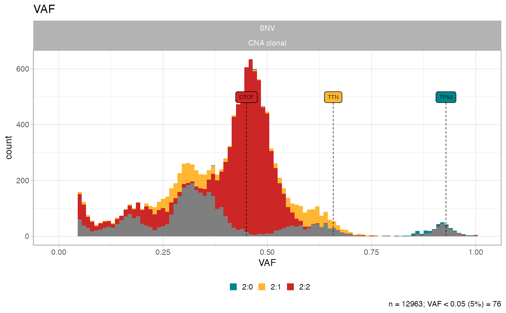

Retains only a subset of mutations, if they have CCF above a cutoff. Note that subclonal CNAs are lost upon application of this function.
subset_by_minimum_CCF(x, min_target_CCF = 0.1)Examples
data('example_dataset_CNAqc', package = 'CNAqc')
x = init(mutations = example_dataset_CNAqc$mutations, cna = example_dataset_CNAqc$cna, purity = example_dataset_CNAqc$purity)
#>
#> ── CNAqc - CNA Quality Check ───────────────────────────────────────────────────
#>
#> ℹ Using reference genome coordinates for: GRCh38.
#> ✔ Found annotated driver mutations: TTN, CTCF, and TP53.
#> ✔ Fortified calls for 12963 somatic mutations: 12963 SNVs (100%) and 0 indels.
#> ! CNAs have no CCF, assuming clonal CNAs (CCF = 1).
#> ✔ Fortified CNAs for 267 segments: 267 clonal and 0 subclonal.
#> ✔ 12963 mutations mapped to clonal CNAs.
# Original data
plot_data_histogram(x)
#> Warning: Removed 8 rows containing missing values or values outside the scale range
#> (`geom_bar()`).

# Original data if CCF is above 10%
plot_data_histogram(subset_by_minimum_CCF(x))
#>
#> ── Cutoffs table for minimum CCF 0.1 ───────────────────────────────────────────
#> # A tibble: 12 × 5
#> karyotype n VAF_cutoff VAF_minimum any_to_filter
#> <chr> <table[1d]> <dbl> <dbl> <chr>
#> 1 2:2 7478 0.0235 0.0451 No
#> 2 4:2 1893 0.0160 0.0455 No
#> 3 3:2 1625 0.0191 0.0452 No
#> 4 2:1 1563 0.0308 0.0465 No
#> 5 3:0 312 0.0308 0.0495 No
#> 6 2:0 81 0.0445 0.08 No
#> 7 16:2 4 0.00548 0.123 No
#> 8 25:2 2 0.00367 0.0849 No
#> 9 3:1 2 0.0235 0.253 No
#> 10 106:1 1 0.000932 0.990 No
#> 11 26:2 1 0.00354 0.0653 No
#> 12 99:1 1 0.000998 0.987 No
#>
#> ! Some karyotypes will not be affected by the desired cut: 2:2, 4:2, 3:2, 2:1, 3:0, 2:0, 16:2, 25:2, 3:1, 106:1, 26:2, and 99:1
#>
#>
#> ── CNAqc - CNA Quality Check ───────────────────────────────────────────────────
#>
#> ℹ Using reference genome coordinates for: GRCh38.
#> ✔ Found annotated driver mutations: TTN, CTCF, and TP53.
#> ✔ Fortified calls for 12963 somatic mutations: 12963 SNVs (100%) and 0 indels.
#> ! CNAs have no CCF, assuming clonal CNAs (CCF = 1).
#> ✔ Fortified CNAs for 267 segments: 267 clonal and 0 subclonal.
#> Warning: [CNAqc] a karyotype column is present in CNA calls, and will be overwritten
#> ✔ 12963 mutations mapped to clonal CNAs.
#> Warning: Removed 8 rows containing missing values or values outside the scale range
#> (`geom_bar()`).